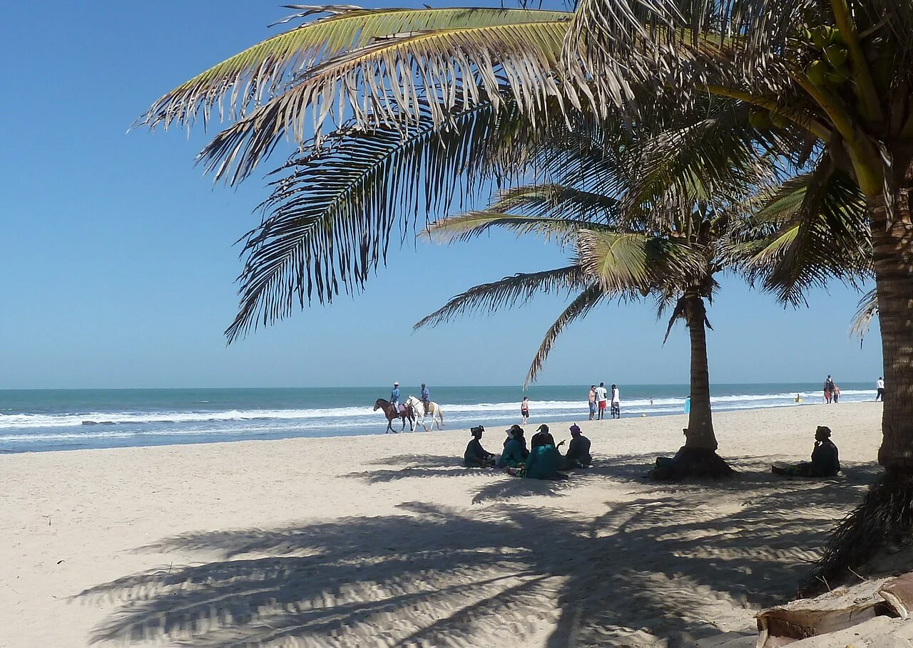

Kotu Beach
Kombo Saint Mary, Gambie · baignade

Plage bordée de cocotiers dans la station balnéaire de Kotu, à 17 km de Banjul. Access Gambia décrit un sable de bonne qualité mais une eau sableuse, avec de petites lagunes bien plus calmes près de l’hôtel Palm Beach. L’Atlantique y va du calme plat au clapot. Des maîtres-nageurs surveillent depuis leur poste et hissent des drapeaux selon les conditions.
- Lieu
- Kombo Saint Mary, Gambie
- Niveau
- Variable selon les conditions
- Activités
- baignade
- Type d'eau
- Mer / océan
- Coordonnées
- 13.47, -16.70 (position approximative du secteur)
Dangers à connaître
- Le fond reste peu profond jusqu’à environ 25 m du bord, puis tombe brutalement (Access Gambia).
- Courants de fond parfois puissants et grosses vagues : demande conseil avant de te baigner (Access Gambia).
- Des physalies passent parfois et des raies pastenagues plus rarement : mets des sandales contre les oursins (Access Gambia).
Le conseil d'Ocean Buddy
Regarde les drapeaux des maîtres-nageurs avant d’entrer : rouge, tu ne te baignes pas ; jaune, tu restes près du bord ; vert, c’est permis (Access Gambia). Ne nage pas seul.
Ouvrir dans Ocean Buddy Télécharger sur l'App Store
Source : Fiche Ocean Buddy · décembre 2026 · d’après Access Gambia, Wikipédia et Climats et Voyages · à vérifier localement.